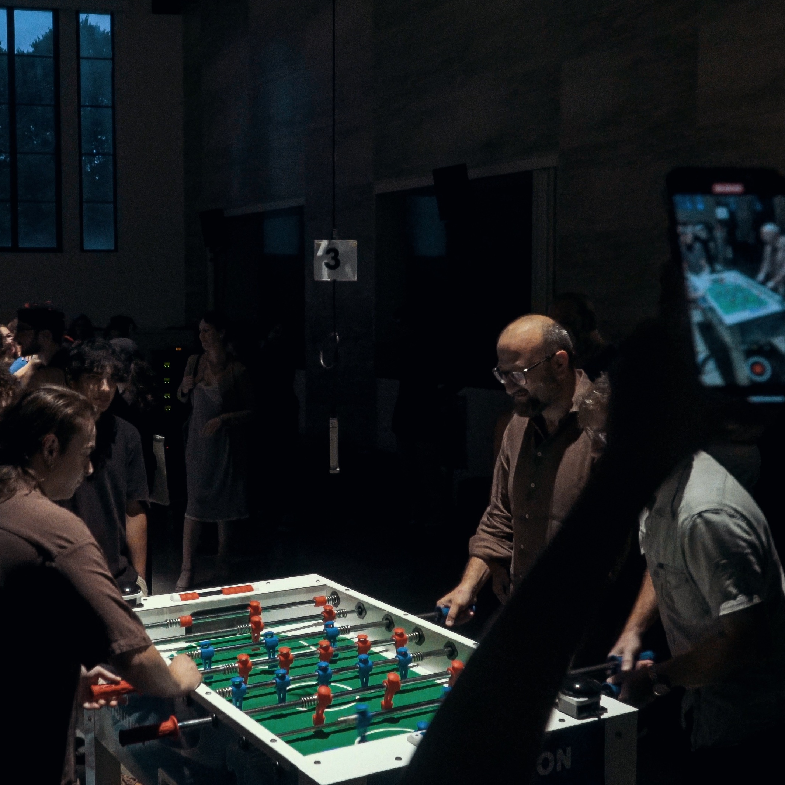

musician, sound engineer and audio programmer based in Bologna (IT).
Working between music producing, live sound engineering and technologies.
|

|
FOSSBALL
Sound action for a plurality of foosball players and live electronics
Concept: Francesco Giomi
Planning and sound design: Agnese Banti, Simone Faraci, Francesco Giomi
IT project: Andrea Trona, Francesco Vogli
Live electronics: Simone Faraci
Sound direction: Francesco Canavese
Moderator: Agnese Banti
Competitive players of the FIGEST – Foosball Speciality: Sergio Ciampone, Lorenzo Galletti, Marco Mollichelli, Marco Paganelli, Davide Pino, Mattia Preti
Recorded voice: Loredana Terminio
Special thanks: Nicola Colacicco, Giochi Sport Emilia Romagna ASD, Circolo MCL Villa Maria (Medicina, BO)
Production: Tempo Reale, perAspera Festival
In collaboration with: Lega Italiana Calcio Balilla
Debut: 2023 / 21th SEPTEMBER - perAspera festival 2023
|
|